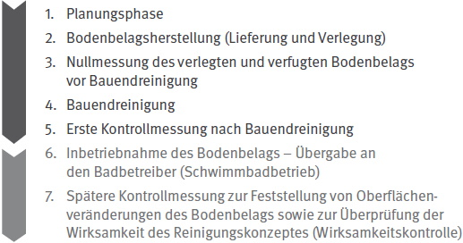

Um Veränderungen der rutschhemmenden Eigenschaften von verlegten Böden bestimmen zu können, wird empfohlen, Vergleichswerte zu ermitteln, die für die rutschhemmende Wirkung des Bodenbelags charakteristisch sind.
Anlässe, eine Kontrolle durchzuführen, sind z. B.:
Hierfür eignet sich z. B. das in der DGUV Information 208-041 "Bewertung der Rutschgefahr unter Betriebsbedingungen" im Kapitel 5 beschriebene Messverfahren mit Bezug zur DIN 51131 "Prüfung von Bodenbelägen – Bestimmung der rutschhemmenden Eigenschaft – Verfahren zur Messung des Gleitreibungskoeffizienten".
Ein Gleitmessgerät nach DIN 51131, z. B. GMG 200, wird geräteunterseitig mit Gleitern ausgerüstet und parallel zur Oberfläche eines Bodenbelags mit konstanter Geschwindigkeit gezogen. Die erforderliche Zugkraft wird über die Messstreckenlänge ermittelt. Die Zugkraft wird durch die vertikal wirkende Kraft dividiert und ergibt den Gleitreibungskoeffizienten.

Abb. 1 Einzelne Schritte zur Kontrolle bzw. präventiven Überwachung von Bodenbelagsoberflächenveränderungen
Es wird empfohlen eine Nullmessung bei neu verlegten Bodenbelägen vor der Bauendreinigung durchzuführen. Die erste Kontrollmessung nach Bauendreinigung ermöglicht eventuelle Oberflächenveränderungen festzustellen (siehe Abb. 1).
Weitere Kontrollmessungen erlauben die regelmäßige Beurteilung der Rutschhemmung im weiteren Betrieb (Monitoring).
Bei einer Abweichung der Messwerte in einer Größenordnung von mehr als 10 % sind weitergehende Maßnahmen zu prüfen.
Sofern keine Nullmessung vorhanden ist, wird folgendes Vorgehen empfohlen:
Die Vergleichsmessungen müssen unter gleichen Prüfbedingungen durchgeführt werden.
Bei folgenden möglichen Maßnahmen werden Vergleichsmessungen von Bodenbelagsflächen vor und nach Abschluss der Maßnahmen zur Wirksamkeitskontrolle empfohlen:
Dabei sind die Messungen an den gleichen Messstellen und unter gleichen Prüfbedingungen durchzuführen.